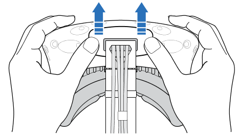
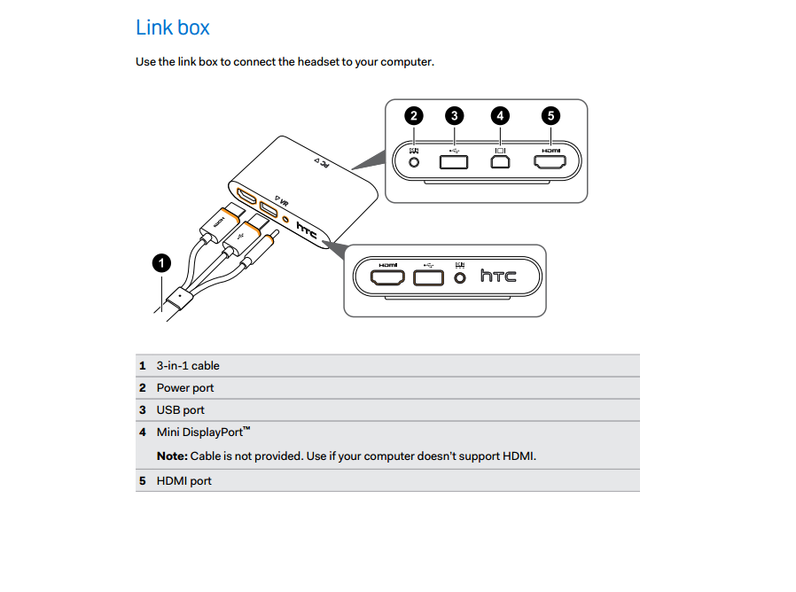

This page will guide you through how to set up, adjust, and use your new HTC Vive VR headset.
This is what you will find when you open the box:
You can purchase extension cords for a better experience for a small price
To change the distance between the lenses, rotate the IPD (Interpupillary distance) knob. As you adjust the IPD, you'll see information displayed in the headset that indicates the current distance between the centers of the lenses.
To change the distance the lenses are from your face, pull out each distance knob that are located on both sides of the headset, then turn them clockwise to adjust how close or far away the lenses are from your face. Once you have set the proper distance, push each knob back in to lock them.
Plug in your USB cable so you can connect your Vive to third party devices. You can do this by following these steps:
Unplug the three in one cable (The 3-in-1 cable connects HDMI, USB and Power from the link box to the VIVE headset with all three cords coming together as one). To do this, follow these steps:
Connect the headset to the computer using the link box (the HTC Vive Link Box serves as a link between your Vive headset and computer to make the magic of virtual reality possible). To do this, follow these steps:
To secure the link box in a permanent position, peel the covers from the mounting pad and firmly press one side of the adhesive surface on the bottom part of the link box, and then attach the link box on the area where you want it installed